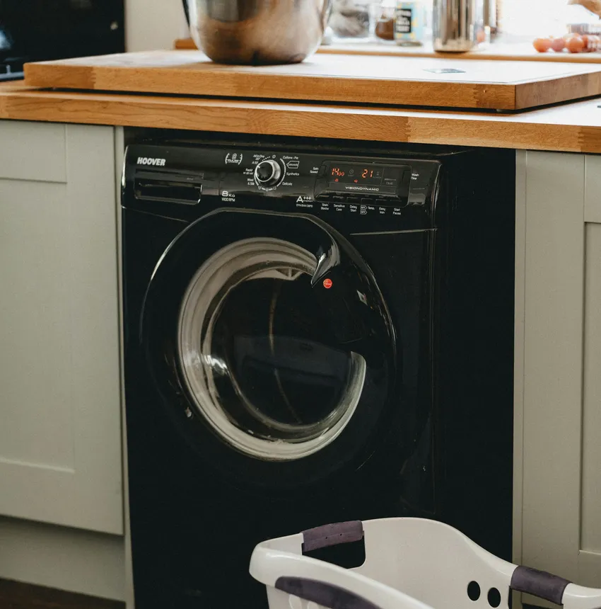

Electrolux markası, İskandinav tasarım anlayışını yenilikçi ev teknolojileriyle birleştiren, dünya çapında kalitesiyle bilinen lider beyaz eşya üreticilerindendir. Evlerimizde günlük yaşamımızı kolaylaştıran, gıdalarımızı taze tutan, giysilerimizi özenle yıkayan ve iklimlendirme sağlayan Electrolux ürünleri, yüksek enerji tasarrufu ve performansları ile öne çıkar.
Ancak en üstün teknolojiye sahip cihazlarda bile zamanla yoğun kullanım, voltaj dalgalanmaları, su kireçlenmesi veya doğal yıpranmalar nedeniyle arızalar meydana gelebilir. İsveç mühendisliği ile üretilmiş bu hassas cihazlarda oluşabilecek bir aksaklık, uzmanlık gerektiren müdahalelere ihtiyaç duyar.
Bölgede yıllardır güvenin simgesi haline gelen Sertler Soğutma, arızalanan veya bakıma ihtiyaç duyan Electrolux marka ürünleriniz için hızlı ve garantili çözümler sunar. Tarsus Electrolux Servisi alanındaki derin tecrübemiz ve uzman teknik kadromuzla, cihazlarınızı ilk günkü çalışma performansına kavuşturmak temel hedefimizdir.
Evlerimizde temel ihtiyaçları karşılayan buzdolabı, çamaşır makinesi, bulaşık makinesi, kurutma makinesi ve iklimlendirme sistemlerinin aniden bozulması günlük düzenimizi olumsuz etkiler. Yiyeceklerin bozulma riskiyle karşı karşıya kalması veya biriken çamaşırlar günlük rutinlerde aksamalara yol açar.
İşte bu noktada Sertler Soğutma, gelişmiş araç filosu ve uzman teknisyen kadrosu ile hızlıca devreye girmektedir. Tarsus Electrolux Servisi taleplerinize aynı gün içerisinde dönüş sağlayarak adresinize ulaşıyor ve yaşadığınız aksaklığı yerinde çözüyoruz.
Electrolux cihazlarının bünyesinde yer alan Inverter motorlar, UltraShed sensör sistemleri ve hassas elektronik denetim kartları özel bir teknik altyapı gerektirir. Standart tamir metodları bu cihazlarda yetersiz kalabileceği gibi ürünün orijinalliğine de zarar verebilir.
Sertler Soğutma personellerimiz, Electrolux ev aletlerinin tüm modelleri ve teknik şemaları üzerinde uzmanlaşmış eğitimli kişilerden oluşur. Tarsus Electrolux Servisi hizmetlerimizde güncel arıza tespit cihazlarını kullanarak sorunun ana kaynağını noktasal olarak saptıyor ve kalıcı çözümler üretiyoruz.
Şeffaf hizmet anlayışımız gereği, işlem öncesinde cihazın mevcut durumu ve yapılması gereken teknik uygulamalar hakkında müşterilerimizi açık bir dille bilgilendiriyoruz. Onayınız alınmadan hiçbir onarım veya parça değişimi adımı başlatılmaz.
Tarsus genelinde sunduğumuz yüksek standartlı servis anlayışımız, firmamızı sektörde en çok tavsiye edilen isim haline getirmiştir. Tarsus Electrolux Servisi ihtiyaçlarınızda Sertler Soğutma güvencesini tercih ederek cihazlarınızı emniyetle teslim edebilirsiniz.
Cihazlarınızın performansını artırmak, enerji verimliliğini korumak ve ömrünü maksimum seviyeye çıkarmak için 7/24 hizmetinizdeyiz. Sertler Soğutma kalitesiyle Electrolux teknolojisi evlerinizde daima maksimum verimle çalışmaya devam eder.
Tarsus Electrolux Servisi Profesyonel Çözüm Merkezi
Profesyonel bir teknik servis çözümü, yalnızca arızalı parçanın sökülüp yenisiyle değiştirilmesinden ibaret değildir. Cihazın genel çalışma dinamiğini analiz etmek ve gelecekte oluşabilecek arızaları önceden engellemek profesyonel çözüm anlayışının temelini oluşturur.
Tarsus Electrolux Servisi alanındaki geniş tecrübesiyle Sertler Soğutma, İsveç teknolojisinin tüm detaylarına hakim bir anlayışla hizmet verir. Profesyonel çözüm merkezimiz, cihazlarınızın fabrikadan ilk çıktığı verimle çalışmasını hedefler.
Onarım sürecinde izlediğimiz adımlar cihazınızın orijinal yapısını korumayı amaçlar. Sertler Soğutma uzmanları, adrese ulaştıklarında cihazın sadece arızalı kısmını değil, ilişkili olan tüm mekanik ve elektronik aksamları incelemeden geçirir.
Electrolux buzdolaplarındaki TwinTech soğutma sistemlerinden çamaşır makinelerindeki SteamCare buhar teknolojilerine kadar her detayı iyi biliyoruz. Tarsus Electrolux Servisi ekiplerimiz, teknolojiye uygun ekipmanlarla müdahale gerçekleştirir.
Gelişmiş servis altyapımız ve uzman kadromuz sayesinde arıza teşhislerimiz kesinlik taşır. Sertler Soğutma, deneysel veya tahmine dayalı onarım metodlarını kesinlikle kullanmaz.
Onarım sırasında evinizin temizliğine ve hijyenine gösterilen özen profesyonel hizmet ilkemizin bir parçasıdır. Ekiplerimiz galoş ve koruyucu örtüler kullanarak çalışma alanını temiz tutar.
Sıradan uygulamalar yerine cihazın ömrünü uzatacak kalıcı teknik çözümler sunuyoruz. Tarsus Electrolux Servisi taleplerinizde Sertler Soğutma profesyonelliği ile tanışarak cihazlarınızı güvenle kullanabilirsiniz.
Tarsus halkına sunduğumuz kaliteli hizmet ve kurumsal yaklaşım, teknik servis alanında fark yaratmamızı sağlamıştır. Her bir müşterimize aynı titizlik ve özenle yaklaşmaktayız.
Electrolux cihazlarınızda karşılaştığınız tüm teknik problemlerde profesyonel yardım almak için çağrı merkezimizi arayabilirsiniz. Sertler Soğutma profesyonel çözümleriyle her zaman yanınızdadır.
Sertler Soğutma Electrolux Bakım ve Tamir Ekibi
Electrolux marka cihazların bakımı ve arızalandığında tamir edilmesi, yüksek uzmanlık ve teknik tecrübe gerektirir. Sertler Soğutma, Electrolux ürün grubunda uzmanlaşmış teknik kadrosuyla Tarsus genelinde kesintisiz servis sunmaktadır. Tarsus Electrolux Servisi ekiplerimiz, her model cihaza uygun müdahale protokolleri ile adrese gelir. İskandinav mühendisliği iklimlendirme ve beyaz eşya çözümleri için profesyonel bir Hatay Electrolux servisi desteğine başvurabilirsiniz.
Electrolux buzdolaplarında meydana gelen soğutmama, terleme, buzlanma yapma veya fan gürültüsü gibi sorunlar Sertler Soğutma tecrübesiyle kısa sürede çözülür. Tarsus Electrolux Servisi teknisyenlerimiz, kompresör performansından gaz basınç değerlerine kadar her detayı inceler.
Çamaşır makinelerinde sıkça görülen sıkma esnasında sarsıntı yapma, ses çıkarma, su boşaltmama gibi durumlarda profesyonel çözümler üretiyoruz. Sertler Soğutma ekibimiz, tambur rulmanlarından amortisörlere kadar tüm mekanik parçaları onarabilir veya değiştirebilir.
Bulaşık makinelerinde yaşanan iyi yıkamama, su ısıtmama veya su sızdırma arızaları da Tarsus Electrolux Servisi uzmanlığımızla çözüme kavuşturulur. Isı pompaları, sirkülasyon motorları ve fıskiye sistemleri garantili olarak yenilenir.
Kurutma makineleri ve pişirme grubu ankastre ürünlerde de Sertler Soğutma imzasıyla yüksek kaliteli servis desteği sunuyoruz. Kurutma makinelerindeki ısı pompası temizlikleri ve fırın rezistans değişimleri güvenle yapılır.
Teknik ekibimiz sürekli olarak güncellenen Electrolux teknolojileri hakkında eğitimler almaktadır. Bu sayede piyasaya yeni sunulan akıllı modellerde dahi arıza tespiti ve tamir işlemleri sorunsuz gerçekleştirilir.
Sertler Soğutma bakım ve tamir ekibi, Electrolux cihazlarınızın performansını ilk günkü seviyesine getirir. Tarsus Electrolux Servisi hizmetlerimizden yararlanmak için müşteri temsilcilerimizle hemen iletişime geçebilirsiniz.
Tarsus Electrolux Servisi Orijinal Yedek Parça Desteği
Electrolux Cihazınız İçin Hemen Randevu Alın
Orijinal yedek parça ve 1 yıl servis garantisiyle Tarsus genelinde aynı gün adresinizdeyiz.
Electrolux beyaz eşyalarının yüksek performanslı ve uzun ömürlü olmasının temelinde kullanılan mühendislik parçaları yer alır. Arıza durumunda yan sanayi veya uyumsuz parçaların tercih edilmesi cihazın diğer aksamlarına da zarar verebilir. Sertler Soğutma, Tarsus Electrolux Servisi süreçlerinde sadece orijinal ve tam uyumlu yedek parçalar kullanmaktadır.
Orijinal yedek parça kullanımı, cihazınızın fabrika çıkışındaki enerji tasarrufu oranlarını ve çalışma sessizliğini muhafaza etmesini sağlar. Sertler Soğutma güvencesi altında gerçekleştirilen parça değişimlerinde takılan yeni parça ve yapılan işçilik 1 yıl resmi garantimiz altındadır.
Yan sanayi parçaların kullanılması durumunda karşılaşılabilecek başlıca sorunlar şunlardır:
- Cihazın ana kartında aşırı voltaj çekimine bağlı yanmalar meydana gelebilir.
- Çalışma gürültüsü ve titreşimi artarak mekanik aşınmaları hızlandırır.
- Enerji tüketimini yükselterek elektrik ve su faturalarının artmasına yol açar.
- Kısa süre içerisinde tekrar arızalanarak ek tamir masrafları çıkarır.
Sertler Soğutma, parça değişimi yapılan her Tarsus Electrolux Servisi işlemi sonrasında müşterilerine resmi garanti belgesi ve detaylı servis formu takdim eder. Değiştirilen arızalı eski parça müşteriye gösterilerek süreç tam bir açık kalplilikle yönetilir.
Electrolux teknolojisine uygun orijinal motorlar, pompalar, kartlar, rezistanslar ve sensörler Sertler Soğutma stoklarında mevcuttur. Tarsus Electrolux Servisi tercihinizi bizden yana kullanarak cihazınızın orijinalliğini koruyabilirsiniz.
Sertler Soğutma ile Electrolux Arızalarında Anında Müdahale
Arızalanan bir ev aleti günlük yaşamın aksamasına ve zaman kaybına neden olur. Özellikle buzdolabı arızalarında gıdaların bozulma riski, hızlı müdahaleyi zorunlu kılar. Sertler Soğutma, Electrolux arızalarında geliştirdiği acil servis ağı ile adrese anında müdahale etmektedir. Gelişmiş hijyen programlarına sahip ev aletleriniz için ise garantili Adapazarı Hotpoint servisi hizmetlerini tercih edebilirsiniz.
Tarsus Electrolux Servisi talebiniz çağrı merkezimize ulaştığı anda konumunuza en yakın mobil aracımız saniyeler içinde organize edilir. Zamanın değerini bilen firmamız, randevu saatlerine tam riayet ederek adrese ulaşır.
Mobil araçlarımızda Electrolux ürün grubuna ait en sık kullanılan yedek parçalar ve gelişmiş arıza tespit cihazları hazır bulundurulur. Bu sayede arızaların büyük çoğunluğu evinizde, ilk ziyarette ve cihaz merkeze taşınmadan çözülür.
Anında müdahale sürecimizde izlenen teknik adımlar şu şekildedir:
- Çağrı kaydının alınması ve ön arıza teşhisinin yapılması.
- Konuma en yakın gezici ekibin navigasyon ile adrese sevk edilmesi.
- Adreste dijital cihazlarla arızanın noktasal olarak tespiti.
- Müşteriye onarım detaylarının ve maliyetin aktarılması.
- Onay sonrası yerinde hızlı onarım veya parça değişiminin tamamlanması.
- Cihazın test edilerek çalışır durumda teslim edilmesi.
Sertler Soğutma, hızlı servis anlayışıyla Tarsus genelinde müşteri mağduriyetlerini en aza indirir. Tarsus Electrolux Servisi arayışınızda zaman kaybetmeden anında çözüme ulaşmak için bizimle iletişime geçebilirsiniz.
Tarsus Electrolux Servisi Hızlı Mobil Servis Ağı
Geniş coğrafi alana yayılmış Tarsus kenti genelinde hızlı hizmet verebilmenin anahtarı güçlü bir mobil servis ağına sahip olmaktır. Sertler Soğutma, Tarsus'un tüm merkez ve çevre mahallelerine konuşlanmış mobil servis araçlarıyla kesintisiz hizmet sunar. Tarsus Electrolux Servisi mobil araçlarımız tam teşekküllü birer teknik atölye donanımına sahiptir.
Mobil servis ağımız sayesinde cihazlarınızın nakliye esnasında çizilme, darbe alma veya düşme riski tamamen ortadan kalkar. Yerinde onarım imkanı, tamir sürecini müşterilerimizin gözü önünde şeffaf bir şekilde gerçekleştirmemizi sağlar.
Mobil servis araçlarımızın sunduğu temel avantajlar şunlardır:
- Hızlı Erişim: Tarsus'un en uzak mahallesine dahi aynı gün içinde servis imkanı.
- Tam Donanım: Araç içerisinde yer alan dijital test cihazları ve orijinal yedek parça stoğu.
- Ekonomik Çözüm: Taşıma ve nakliye masrafları oluşmadığı için bütçe dostu servis hizmeti.
- Zaman Tasarrufu: Günlerce servis bekleme çilesine son veren aynı gün müdahale kapasitesi.
Sertler Soğutma mobil teknisyenleri, güler yüzlü ve saygılı hizmet anlayışıyla hareket eder. Evinize konuk olan ekiplerimiz hijyen kurallarına uyarak galoş kullanır.
Acil buzdolabı arızalarında veya su sızıntılarında mobil ekiplerimize öncelikli yönlendirme yapılır. Tarsus Electrolux Servisi mobil ağımız ile sorunlarınız büyümeden kontrol altına alınır.
Hızlı, pratik ve yerinde teknik servis desteği almak istiyorsanız mobil ekiplerimiz göreve hazırdır. Sertler Soğutma telefon numaralarını arayarak anında konumunuza ekip çağırabilirsiniz.
Sertler Soğutma Electrolux Beyaz Eşya Periyodik Bakımı
Electrolux beyaz eşyaların uzun yıllar boyunca arızalanmadan, ilk günkü verimiyle çalışabilmesi için belirli aralıklarla periyodik bakımdan geçmesi şarttır. Düzenli bakımlar cihazların performansını korurken elektrik ve su tüketimini de belirgin şekilde düşürür. Sertler Soğutma, Electrolux ürünlerine özel periyodik bakım hizmeti sunmaktadır.
Bakımsız kalan beyaz eşyalarda kireçlenme, tozlanma ve mekanik sürtünmelere bağlı olarak performans kayıpları yaşanır. Tarsus Electrolux Servisi ekibimiz, bakım süreçlerinde cihazın tüm hayati organlarını detaylı temizlik ve kontrolden geçirir.
Periyodik bakım kapsamında gerçekleştirilen başlıca işlemler şunlardır:
- Buzdolabı Bakımı: Kondanser temizliği, defrost su kanalı açılması, kapı fitili sızdırmazlık testi ve gaz basınç ölçümü.
- Çamaşır Makinesi Bakımı: Deterjan kutusu temizliği, kazan kireç arındırma, tahliye pompası hijyeni ve amortisör kontrolü.
- Bulaşık Makinesi Bakımı: Fıskiye delikleri kireç temizliği, ana süzgeç hijyeni ve su yumuşatıcı rezonans ayarları.
- Kurutma Makinesi Bakımı: Isı pompası filtre derin temizliği, nem sensör kalibrasyonu ve hav birikintisi tahliyesi.
Sertler Soğutma tarafından gerçekleştirilen periyodik bakımlar sayesinde cihazlarınızın aniden bozulma riski en aza indirilir. Tarsus Electrolux Servisi bakımları ile ev bütçenize doğrudan katkı sağlarsınız.
Eşyalarınızın ömrünü uzatmak ve yüksek faturaların önüne geçmek için bakım randevunuzu aksatmamalısınız. Sertler Soğutma uzman kadrosuyla Electrolux cihazlarınızı geleceğe hazırlar.
Kaliteli Tarsus Electrolux Servisi Hizmet Anlayışı
Hizmet sektöründe kalıcılığı sağlayan en önemli değer kaliteli hizmet anlayışıdır. Sertler Soğutma, kurulduğu günden bu yana müşteri memnuniyetini ve teknik kaliteyi ön planda tutan bir çalışma felsefesi benimsemiştir. Tarsus Electrolux Servisi süreçlerimizde bu kaliteden taviz verilmez. Bütçe dostu pratik ev teknolojilerinizde oluşabilecek aksaklıklarda deneyimli bir Adapazarı İndesit servisi firmasından yardım alabilirsiniz.
Kaliteli hizmet anlayışımızın temel taşları şunlardır:
- Dürüstlük ve Şeffaflık: Yapılacak işlemler ve maliyetler müşteriye açıkça aktarılır, gizli giderler çıkarılmaz.
- Eğitimli Kadro: Electrolux teknolojilerine hakim, teknik yetkinlik belgelerine sahip uzman personeller.
- Zaman Yönetimi: Söz verilen randevu saatlerine tam riayet edilmesi ve zaman kaybı yaşatılmaması.
- Garantili Uygulama: Değiştirilen parçalar ve yapılan işçilikler için 1 yıl resmi garanti sunulması.
- Müşteri Odaklı Destek: Servis sonrası süreçte de müşterilerin soru ve taleplerine yanıt verilmesi.
Sertler Soğutma, Tarsus genelinde Electrolux kullanıcılarına güven veren bir çözüm ortağı olmanın gururunu yaşar. Tarsus Electrolux Servisi taleplerinizde kurumsal yaklaşımımızla yanınızdayız.
Geçici ve amatör tamir yöntemleri yerine uzun ömürlü ve kalıcı çözümler üretiyoruz. Sertler Soğutma kalitesi ile cihazlarınız emin ellerde işlem görür.
Siz de kaliteli ve saygın bir teknik servis tecrübesi yaşamak istiyorsanız bizimle iletişime geçebilirsiniz. Tarsus Electrolux Servisi ekibimiz sizlere hizmet sunmaktan mutluluk duyar.
Sertler Soğutma Electrolux Parça Değişim Süreci
Arızalı beyaz eşyalarda uygulanan parça değişim süreci, cihazın kalan kullanım ömrünü doğrudan belirleyen kritik bir aşamadır. Hatalı montaj veya uygunsuz parça kullanımı cihazın tamamen kullanılamaz hale gelmesine yol açabilir. Sertler Soğutma, Electrolux parça değişim süreçlerini disiplinli adımlarla yönetir.
- Tarsus Electrolux Servisi teknisyenlerimiz parça değişim sürecinde şu aşamaları eksiksiz uygular:
- Dijital test cihazları ile parçanın arızalı olduğu kesin olarak teyit edilir.
- Müşteriye değişmesi gereken parça, nedeni ve maliyeti hakkında detaylı bilgi sunulur.
- Onay alınmasının ardından Electrolux cihazın modeline tam uyumlu orijinal sıfır parça ambalajından çıkarılır.
- Eski yıpranmış parça sökülerek montaj yuvası ve bağlantı elemanları temizlenir.
- Yeni parçanın montajı fabrika tork ve sızdırmazlık değerlerine uygun olarak gerçekleştirilir.
- Cihaz test programında çalıştırılarak parçanın uyumu ve performansı kontrol edilir.
- Garanti belgesi ve detaylı servis formu müşteriye teslim edilerek eski parça gösterilir.
Sertler Soğutma, parça değişiminde sıfır hata prensibiyle hareket eder. Yapılan doğru montaj sayesinde cihazın diğer aksamlarının zarar görmesi engellenir.
Değiştirilen tüm orijinal parçalar 1 yıl süreyle firmamızın garantisi altındadır. Garanti süresi içinde yaşanabilecek teknik aksaklıklarda ücretsiz parça değişimi sağlanır.
Electrolux cihazlarınızda parça değişimi gerektiren durumlar için Sertler Soğutma uzmanlığına başvurabilirsiniz. Tarsus Electrolux Servisi ekibimiz orijinal parçalarla cihazınızı yeniler.
Tarsus Electrolux Servisi Fiyat Kataloğu
Teknik servis hizmetlerinde sunulan fiyatlandırmanın adil, şeffaf ve anlaşılır olması müşteri güveninin temelidir. Sertler Soğutma, Tarsus ve çevresinde yürüttüğü Tarsus Electrolux Servisi hizmetlerinde makul ve bütçe dostu bir fiyat politikası benimsemektedir. İklimlendirme ve beyaz eşya alanında Hatay bölgesinde kaliteli bir AEG servisi arayışında olan kullanıcılar gibi, Tarsus genelinde de Sertler Soğutma olarak kesintisiz çözümler sunmaktayız.
Firmamızda sabit ve gerçek dışı fiyat katalogları yerine; cihazın modeline, arızanın niteliğine, değişecek parçanın türüne ve harcanacak işçilik süresine göre şekillenen adil bir fiyatlandırma modeli uygulanır. Müşterilerimize onaylamadıkları hiçbir ücret kalemi yansıtılmaz.
Fiyatlandırma prensiplerimizin temel adımları şunlardır:
- Şeffaf İletişim: Arıza tespiti sonrası tüm harcama kalemleri müşteriye açıkça aktarılır.
- Doğru Teşhis ile Tasarruf: Arızasız parçaların gereksiz yere değiştirilmesi engellenir.
- Orijinal Parça Avantajı: Orijinal parçalar doğrudan tedarik kanallarımız sayesinde uygun koşullarla sunulur.
- Garantili Onarım: Aynı arızanın tekrar etmesi durumunda garanti kapsamında ek ücret alınmaz.
Servis bedelimiz, adresinize gelen ekibin yaptığı detaylı arıza tespiti ve yol harcamalarını kapsar. Tamir hizmetini onaylamanız durumunda bu tespit ücreti toplam tutardan düşülmektedir.
Ödemelerinizi kolaylaştırmak adına kapıda nakit ödeme imkanının yanı sıra mobil POS cihazlarımız ile kredi kartına taksit veya tek çekim seçenekleri sunuyoruz. Sertler Soğutma, ekonomik çözümleriyle her zaman yanınızdadır.
Cebinizi yormadan Electrolux eşyalarınızı güvence altına almak için Tarsus Electrolux Servisi uzmanlığımızdan faydalanabilirsiniz. Bütçenize uygun teknik destek için bize dilediğiniz an ulaşabilirsiniz.
Sertler Soğutma Electrolux Arıza Kodu Çözümleri
Modern Electrolux ev aletleri, bünyelerinde bulunan gelişmiş mikroişlemciler sayesinde herhangi bir aksaklık durumunda dijital ekranlarında arıza kodları (hata kodları) gösterir. Bu kodlar arızanın gerçekleştiği sistem hakkında teknisyene önemli ipuçları sunar. Sertler Soğutma, Electrolux arıza kodu çözümlerinde uzman kadrosuyla hizmet verir.
Ancak ekranda görünen kod sadece bir belirtidir; kodun arkasındaki kök nedeni bulmak teknik tecrübe gerektirir. Tarsus Electrolux Servisi ekibimiz, kodların gösterdiği arızaları noktasal olarak çözer.
Electrolux cihazlarda sıkça karşılaşılan bazı temel arıza kodları ve çözümlerimiz şunlardır:
- Electrolux Çamaşır Makinesi E10 Hata Kodu: Cihaz su almıyor veya su girişi yetersiz. Su vanası, hortum filtreleri ve giriş ventili kontrol edilir.
- Electrolux Çamaşır Makinesi E20 Hata Kodu: Cihaz suyu boşaltamıyor. Tahliye pompası, filtre ve tahliye hortumu tıkanıklıkları açılır.
- Electrolux Çamaşır Makinesi E40 Hata Kodu: Kapak tam kilitlenmedi. Kapak emniyet kilidi ve kart bağlantıları kontrol edilir.
- Electrolux Bulaşık Makinesi i10 / i11 Hata Kodu: Su doldurma süresi aşıldı. Su giriş hattı ve sensörler test edilir.
- Electrolux Bulaşık Makinesi i20 Hata Kodu: Su tahliye arızası. Tahliye pompası ve basınç sensörü onarılır.
- Electrolux Bulaşık Makinesi i30 Hata Kodu: Taşıma emniyet sistemi aktif (alt tavan su sızdırmış). Su kaçağının kaynağı tespit edilip sızdırmazlık sağlanır.
Sertler Soğutma, arıza kodu çözümlerinde bilgisayarlı analiz cihazlarından faydalanır. Bu sayede hatalı parça değişimlerinin ve gereksiz maliyetlerin önüne geçilmiş olur.
Cihazınızın ekranında bir hata kodu gördüğünüzde panik yapmadan bizi arayabilirsiniz. Tarsus Electrolux Servisi uzmanlarımız telefonda ön bilgi sağlayacak ve gerekirse adrese gelerek sorunu çözecektir.
Tarsus Electrolux Servisi Müşteri Memnuniyeti
Müşteri memnuniyeti, Sertler Soğutma firmamızın kurumsal başarısının ve varlığının en temel ölçütüdür. Tarsus ve çevresinde sunduğumuz tüm hizmetlerde müşterilerimizin yüzünü güldürmeyi ve güvenini kazanmayı hedefliyoruz.
Tarsus Electrolux Servisi alanında kazandığımız yüksek memnuniyet oranı, yıllardır sürdürdüğümüz ilkeli ve dürüst çalışma anlayışının bir sonucudur. Tarsus halkının göstermiş olduğu güvene layık olmak için çalışıyoruz.
Müşteri memnuniyetini sağlamak amacıyla uyguladığımız temel ilkeler şunlardır:
- Saygılı ve Hijyenik Hizmet: Ekiplerimiz evinizde galoş kullanarak temiz bir çalışma alanı bırakır.
- Açık İletişim: Anlaşılır bir dille arızanın nedeni ve çözümü müşteriye izah edilir.
- Sözünde Durma: Belirtilen randevu saatlerine tam zamanında uyum gösterilir.
- Hizmet Sonrası Takip: Onarım sonrasında müşterilerimiz aranarak memnuniyet durumu sorgulanır.
Sertler Soğutma, olası bir aksaklık durumunda müşterisinin yanında yer alarak telafi edici adımları hızla atar. Müşteri geri bildirimleri hizmet kalitemizi sürekli artırmamızda rehberimizdir.
Yıllar içerisinde edindiğimiz mutlu müşteri portföyümüz bizlerin en büyük referansıdır. Bizi komşularına ve yakınlarına tavsiye eden müşterilerimize teşekkür ederiz.
Siz de ayrıcalıklı, saygılı ve garantili bir teknik servis deneyimi yaşamak istiyorsanız bizimle iletişime geçebilirsiniz. Tarsus Electrolux Servisi memnuniyet garantisiyle hizmet vermektedir.
Sertler Soğutma Electrolux Bakım Periyotları
Electrolux ev aletlerinin ve iklimlendirme sistemlerinin arızalanmadan, ilk günkü performansını koruyarak uzun yıllar çalışabilmesi için belirli periyotlarla bakımdan geçmesi şarttır. Düzenli bakım hem büyük arıza masraflarını önler hem de yüksek enerji faturalarının önüne geçer. Sertler Soğutma, Electrolux cihaz türlerine özel ideal bakım periyotları belirlemiştir.
Önerdiğimiz ideal bakım periyotları ve işlem detayları şunlardır:
- Electrolux Buzdolabı Bakım Periyodu (Yılda 1 Kez): Yılda bir kez kondanser temizliği, defrost su kanalı açılması, kapı fitil kontrolleri ve soğutucu gaz basınç ölçümü yapılmalıdır.
- Electrolux Çamaşır Makinesi Bakım Periyodu (6-12 Ayda Bir): Kullanım sıklığına göre 6 ila 12 ayda bir kireç temizliği, deterjan kutusu ve filtre hijyeni, süspansiyon kontrolleri yapılmalıdır.
- Electrolux Bulaşık Makinesi Bakım Periyodu (6 Ayda Bir): 6 ayda bir fıskiye delikleri kireç temizliği, ana süzgeç filtre hijyeni ve su yumuşatıcı ayarları kontrol edilmelidir.
- Electrolux Kurutma Makinesi Bakım Periyodu (6 Ayda Bir): Isı pompası filtre temizliği, nem sensör kalibrasyonu ve hav birikintisi temizliği yapılmalıdır.
- Electrolux Klima Bakım Periyodu (Yılda 2 Kez): Yaz ve kış sezonları öncesinde filtre dezenfeksiyonu, dış ünite temizliği ve gaz basınç ölçümleri yapılmalıdır.
Sertler Soğutma tarafından yürütülen bu bakım periyotları sayesinde cihazlarınızın aniden bozulma riski %80 oranında azalır. Bakımı yapılan cihazlar daha az kaynak harcayarak bütçenizi korur.
Siz de Electrolux eşyalarınızın bakım zamanının geldiğini düşünüyorsanız Tarsus Electrolux Servisi çağrı merkezimizi arayarak periyodik bakım randevunuzu oluşturabilirsiniz. Sertler Soğutma planlı bakımlarla cihazlarınızı korur.
Sıkça Sorulan Sorular (S.S.S.)
Sertler Soğutma olarak Tarsus genelinde konuşlanmış mobil servis araçlarımız bulunmaktadır. Çağrı kaydınız alındıktan sonra bölgesel yoğunluğa bağlı olarak genellikle aynı gün içerisinde, belirteceğiniz saat diliminde adresinizde oluyoruz.
Evet. Sertler Soğutma bünyesinde gerçekleştirilen tüm yedek parça değişimleri ve işçilik uygulamaları 1 yıl süreyle firmamızın resmi garantisi altındadır. Garanti süresi boyunca değiştirilen parçada oluşabilecek teknik aksaklıklar ücretsiz giderilir.
E20 hatası su tahliye arızasını gösterir. Makinenin fişini çektikten sonra alt sağ kısımdaki pompa kapağını açarak filtreyi temizleyebilirsiniz. Sorun devam ederse Tarsus Electrolux Servisi ekibimizi çağırabilirsiniz.
i30 hatası cihazın alt taban tavasına su sızdığını ve emniyet sisteminin aktifleştiğini gösterir. Cihazın fişini çekip su vanasını kapatmalı ve Sertler Soğutma teknisyenlerimizden yardım almalısınız.
Evet. Sertler Soğutma, Electrolux cihazlarınızın uzun ömürlü ve verimli çalışması adına işlemlerinde sadece tam uyumlu ve orijinal yedek parçalar kullanmaktadır. Yan sanayi parçalar firmamızca tercih edilmez.
Arızaların büyük bir kısmı (%90 oranında) mobil ekiplerimiz tarafından evinizde yerinde onarılmaktadır. Ancak ağır mekanik arızalar veya test gerektiren kart tamirlerinde cihaz onayınız alınarak merkezimize götürülebilir.
Sertler Soğutma müşterilerine esnek ödeme kolaylıkları sağlar. Ödemelerinizi kapıda nakit olarak veya teknisyenlerimizde bulunan mobil POS cihazları aracılığıyla kredi kartı/banka kartı ile güvenle yapabilirsiniz.
Işıkların yanması cihaza elektrik geldiğini gösterir. Soğutmama sorunu genellikle kompresör arızasından, soğutucu gaz kaçağından, fan motoru kilitlenmesinden veya anakart arızasından kaynaklanır. Sertler Soğutma teknisyenlerimizin adreste dijital ölçüm yapması gerekir.
Evet. Sertler Soğutma, 7/24 kesintisiz hizmet anlayışıyla çalışmaktadır. Cumartesi, Pazar günleri ve resmi tatillerde nöbetçi Tarsus Electrolux Servisi ekiplerimiz acil servis talepleriniz için görev başındadır.
Aşırı sarsıntı ve yürüme sorunu genellikle cihazın zemin dengesizliğinden, amortisörlerin yıpranmasından veya kazan denge ağırlıklarının gevşemesinden kaynaklanır. Sertler Soğutma teknisyenleri amortisör değişimi ve ayak ayarı ile sorunu çözer.
Adresinize gelen Tarsus Electrolux Servisi ekibimizin yaptığı detaylı arıza tespiti sonrasında tamir işlemini onaylamazsanız, sadece standart arıza tespit ücreti ödersiniz. Tamir işlemini onaylamanız durumunda ise tespit ücreti toplam tutardan düşülür.
Buzdolabının altından su sızması genellikle iç kısımdaki defrost su tahliye kanalının tıkanmasından kaynaklanır. Erinen buz suları dışarıdaki buharlaşma kabına akamadığı için dolap içine ve dışına sızar. Sertler Soğutma ekiplerimiz kanalı özel cihazlarla açar.
Electrolux cihazlarınızın yılda en az bir kez detaylı periyodik bakımdan geçirilmesi önerilir. Düzenli bakım hem cihaz ömrünü uzatır hem de yüksek elektrik ve su tüketiminin önüne geçerek bütçenizi korur.
Firmamız Tarsus merkezdeki tüm mahallelerin yanı sıra bağlı belde, köy ve yakın sanayi bölgelerine kadar geniş bir coğrafyada Tarsus Electrolux Servisi mobil hizmeti sunmaktadır.
Sertler Soğutma telefon numaralarımızı arayarak, WhatsApp hattımızdan mesaj atarak veya web sitemizde bulunan online randevu formunu doldurarak anında Electrolux servis kaydı oluşturabilirsiniz.